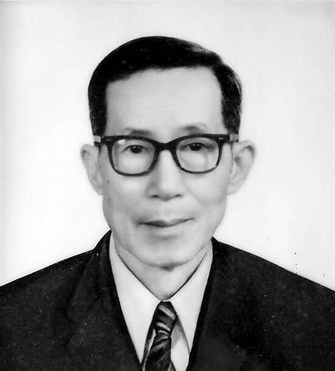

SYSU-RA-006 人物正文 / PROFILE
梁钊韬
1916 — 1987 · 广东顺德 · 中山大学历史系 / 人类学系
梁钊韬是人类学家、考古学家。1958 年他鉴定了曲江出土的“马坝人”头骨化石。1981 年，他推动复办新中国第一个人类学系，并出任首任系主任。
不经自己核实的材料不能用，不经自己深思熟虑的观点不要写。梁钊韬 · 治学原则，学生黄淑娉回忆

SYSU-RA-006 人物正文 / PROFILE
1916 — 1987 · 广东顺德 · 中山大学历史系 / 人类学系
梁钊韬是人类学家、考古学家。1958 年他鉴定了曲江出土的“马坝人”头骨化石。1981 年，他推动复办新中国第一个人类学系，并出任首任系主任。
不经自己核实的材料不能用，不经自己深思熟虑的观点不要写。梁钊韬 · 治学原则，学生黄淑娉回忆
1958 年，曲江县马坝乡农民在狮子岩挖磷肥，从堆积层里挖出一块残断的人类头骨化石。时任中山大学历史系考古教研室主任的梁钊韬带队赶到现场，协助清理和发掘。
他判断这块化石属于猿人或古人阶段，年代介于北京猿人和山顶洞人之间。中国科学院专家后来复查，证实鉴定正确，并测定为距今约 13 万年前的早期智人化石。“马坝人”填补了中国古人类进化史上的一段空白。
1952 年院系调整后，人类学系被取消。改革开放后，梁钊韬向教育部和中大写报告，论证“社会主义中国需要人类学”，并赴北京与费孝通、吴文藻、夏鼐、贾兰坡等学者沟通。
1981 年，教育部批准中山大学复办人类学系，这是中国大陆改革开放后复办的第一个人类学系。梁钊韬出任首任系主任，提出体质人类学、考古学、文化人类学和语言人类学的“四科架构”，并创建人类学博物馆。他培养了新中国首位人类学博士、首位藏族博士格勒。
1937 年，梁钊韬从厦门大学转入中山大学历史系，师从杨成志。1939 年毕业后考入中大研究院。抗战期间他随校西迁云南澄江、粤北乐昌，深入少数民族村寨做田野调查。
他传承导师的信条：“人类学家是用两条腿走出来的。”从 1941 年留校到 1987 年逝世，他在中大工作和任教 46 年。
生于广东顺德。
从厦门大学转入中山大学历史系。
起留校任教。
鉴定曲江“马坝人”头骨化石。
复办人类学系，任首任系主任。
逝世。